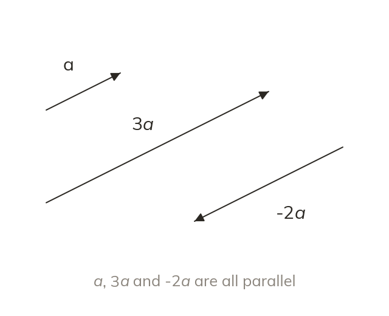
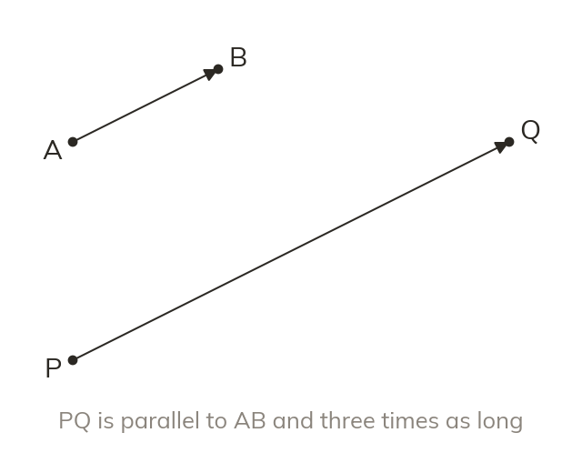

Scaling keeps the direction
Multiplying by a scalar multiplies every component. 3a points the same way as a and is three times as long.
Doubling a velocity keeps the direction and doubles the speed. Today we multiply vectors by numbers, and use that to spot parallel vectors.
Work down the page at your own pace. Write every answer in your book first, then click to check it.
Read each card, then follow the worked examples one step at a time.

Multiplying by a scalar multiplies every component. 3a points the same way as a and is three times as long.

Two vectors are parallel when one is a scalar multiple of the other. A negative multiple is parallel too, pointing the other way.
Pick an answer. If it's wrong, the feedback tells you which mistake it was.
Read each card, then follow the worked examples one step at a time.
Parallel vectors share one multiplier for both components. So a known pair gives the multiplier, and the multiplier finds the unknown.

The scalar multiple gives the ratio of the lengths. PQ→ = 3AB→ makes PQ three times as long as AB.
Pick an answer. If it's wrong, the feedback tells you which mistake it was.
Finished? Next lesson: 11H.8.3 Adding and Subtracting Vectors.
Log in, then search for a code to practise that skill.
Videos, worksheets and more on each part of this lesson.